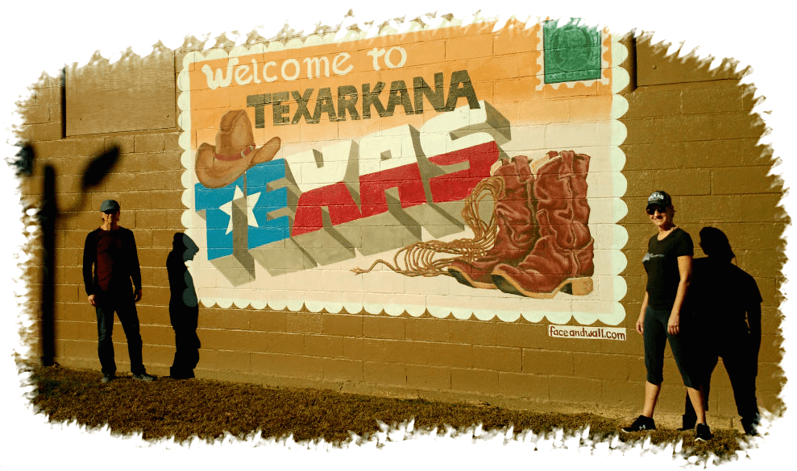
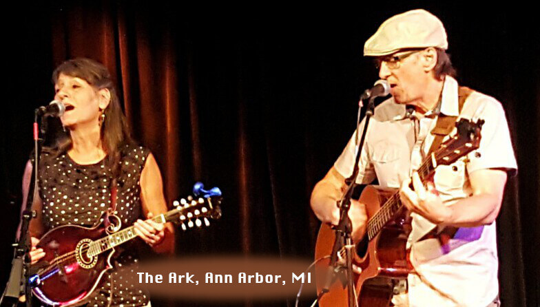

We're Booking 2025! Email, Call, or Contact Soon to be sure you get your dates.

SCHEDULE
Note: Raggedy Edge shows are in DARK BLUE.
2024!
12.1 Hacienda at the Canyon (Library)
12.3 Woodland Palms, Tucson (Bob Solo)
12.4 Broadway Proper, Tucson
12.6 Avista Foothills, Tucson *
12.9 Cascades of Tucson, Tucson
12.12 Atria Valley Manor, Tucson
12.13 Arizona Veterans Home, Tucson
12.13 Hacienda at the Canyon (Gardens) *
12.15 Hacienda at the Canyon (Library) *
12.16 Atria Campaño del Rio, La Niña, Tucson *
12.12 Brookdale Santa Catalina, Tucson *
12.25 Watermark @ Oro Valley, Tucson
12.27 Inspirations of River Centre, Tucson
12.27 Brookdale Santa Catalina, IL, Tucson
12.29 Hacienda at the Canyon (Gardens)
12.30 Atria Campaña del Rio, Life Guidance, Tucson *
1.1 Tucson Place @ Ventana Canyon, Tucson
1.5 Hacienda at the Canyon, Tucson (Inn)*
1.7 Brookdale at Santa Catalina, Tucson *
1.10 Avista Foothills, Tucson *
1.10 Hacienda at the Canyon (Garden), Tucson *
1.13 Atria Compaña del Rio MC, Tucson *
1.17 Arizona Veterans Home, Tucson
1.17 Brookdale Santa Catalina IL, Tucson
1.19 Hacienda at the Canyon, Tucson (Inn)*
1.21 Brookdale at Santa Catalina, Tucson *
1.22 Woodland Palms, Tucson *
1.27 Atria Compaña del Rio MC, Tucson *
1.29 Sierra del Sol, Tucson
1.31 Inspirations of River Centre, Tucson
2.2 Hacienda at the Canyon, Tucson (Inn)*
2.7 Hacienda at the Canyon (Garden), Tucson *
2.10 Atria Compaña del Rio MC, Tucson *
2.14 Avista Foothills, Tucson *
2.16 Hacienda at the Canyon, Tucson (Inn)*
2.17 Cascades of Tucson, Arizona
2.19 Woodland Palms, Tucson *
2.21 Arizona Veterans Home, Tucson
2.21 Brookdale Santa Catalina IL, Tucson
2.24 Atria Compaña del Rio MC, Tucson *
2.26 Atria Compaña del Rio La Nina HH, Tucson
3.2 Hacienda at the Canyon, Tucson (Inn)*
3.7 Hacienda at the Canyon (Garden), Tucson *
3.10 Atria Compaña del Rio MC, Tucson *
3.14 Avista Foothills, Tucson *
3.17 Cascades of Tucson, Arizona
3.19 Woodland Palms, Tucson *
3.21 Arizona Veterans Home, Tucson
3.21 Brookdale Santa Catalina IL, Tucson
3.23 Hacienda at the Canyon, Tucson (Inn)*
3.24 Atria Compaña del Rio MC, Tucson *
4.7 Park Senior Living, Tucson *
4.11 Avista Foothills, Tucson *
4.11 Hacienda at the Canyon (Garden), Tucson *
4.13 Hacienda at the Canyon, Tucson (Inn)*
4.14 Atria Compaña del Rio MC, Tucson *
4.16 Woodland Palms, Tucson *
4.18 Brookdale Santa Catalina IL, Tucson
4.27 Hacienda at the Canyon, Tucson (Inn)*
4.28 Atria Compaña del Rio MC, Tucson *
5.5 Park Senior Living, Tucson *
5.9 Avista Foothills, Tucson *
5.9 Hacienda at the Canyon (Garden), Tucson *
5.11 Hacienda at the Canyon, Tucson (Inn)
12 Atria Compaña del Rio MC, Tucson *
5.14 Woodland Palms, Tucson *
5.16 Brookdale Santa Catalina IL, Tucson
5.25 Hacienda at the Canyon, Tucson (Inn)*
5.26 Atria Compaña del Rio MC, Tucson *
6.6 Tucson Place @ Ventana Canyon, Tucson
6.9 Atria Compaña del Rio MC, Tucson *
6.13 Avista Foothills, Tucson *
6.13 Hacienda at the Canyon (Garden), Tucson *
6.15 Hacienda at the Canyon, Tucson (Inn)
6.16 Cascades of Tucson, Arizona
6.20 Brookdale Santa Catalina IL, Tucson
6.23 Atria Compaña del Rio MC, Tucson *
6.25 Woodland Palms, Tucson *
6.29 Hacienda at the Canyon, Tucson (Inn)*
6.30 Park Senior Living, Tucson *
7.4 Tucson Place @ Ventana Canyon, Tucson
7.11 Avista Foothills, Tucson *
7.11 Hacienda at the Canyon (Garden), Tucson *
7.13 Hacienda at the Canyon, Tucson (Inn)*
7.14 Atria Compaña del Rio MC, Tucson *
7.18 Brookdale Santa Catalina IL, Tucson
7.23 Woodland Palms, Tucson *
7.25 Cascades of Tucson, Arizona
7.27 Hacienda at the Canyon, Tucson (Inn)*
7.28 Atria Compaña del Rio MC, Tucson *
8.8 Avista Foothills, Tucson *
8.8 Hacienda at the Canyon (Garden), Tucson *
8.10 Hacienda at the Canyon, Tucson (Inn)*
8.11 Atria Compaña del Rio MC, Tucson *
8.15 Brookdale Santa Catalina IL, Tucson
8.20 Woodland Palms, Tucson *
8.24 Hacienda at the Canyon, Tucson (Inn)*
8.25 Atria Compaña del Rio MC, Tucson *
8.29 Tucson Place @ Ventana Canyon, Tucson
9.5 Hacienda at the Canyon (Garden), Tucson *
9.7 Hacienda at the Canyon, Tucson (Inn)
9.8 Atria Compaña del Rio MC, Tucson *
9.12 Avista Foothills, Tucson *
9.19 Brookdale Santa Catalina IL, Tucson
9.21 Hacienda at the Canyon, Tucson (Inn)*
9.22 Atria Compaña del Rio MC, Tucson *
9.24 Woodland Palms, Tucson *
10.5 Hacienda at the Canyon, Tucson (Inn)*
10.10 Avista Foothills, Tucson *
10.13 Atria Compaña del Rio MC, Tucson *
10.17 Brookdale Santa Catalina IL, Tucson
10.17 Hacienda at the Canyon (Garden), Tucson *
10.19 Hacienda at the Canyon, Tucson (Inn)*
10.20 Cascades of Tucson, Arizona
10.22 Woodland Palms, Tucson *
10.27 Atria Compaña del Rio MC, Tucson *
10.31 Tucson Place @ Ventana Canyon, Tucson
11.7 Hacienda at the Canyon (Garden), Tucson *
11.9 Hacienda at the Canyon, Tucson (Inn)*
11.10 Atria Compaña del Rio MC, Tucson *
11.14 Avista Foothills, Tucson *
11.19 Woodland Palms, Tucson *
11.21 Brookdale Santa Catalina IL, Tucson
11.23 Hacienda at the Canyon, Tucson (Inn)*
11.24 Atria Compaña del Rio MC, Tucson *
12.5 Tucson Place @ Ventana Canyon, Tucson
12.7 Hacienda at the Canyon, Tucson (Inn)*
12.8 Atria Compaña del Rio MC, Tucson *
12.12 Cascades of Tucson, Arizona
12.17 Woodland Palms, Tucson *
12.19 Avista Foothills, Tucson *
12.19 Hacienda at the Canyon (Garden), Tucson *
s 12.21 Hacienda at the Canyon, Tucson (Inn)*
12.22 Atria Compaña del Rio MC, Tucson *
Hope to see you at a gig soon. Be sure to sign up for our newsletter to find out when that might be.
12.3 Woodland Palms, Tucson (Bob Solo)
12.4 Broadway Proper, Tucson
12.6 Avista Foothills, Tucson *
12.9 Cascades of Tucson, Tucson
12.12 Atria Valley Manor, Tucson
12.13 Arizona Veterans Home, Tucson
12.13 Hacienda at the Canyon (Gardens) *
12.15 Hacienda at the Canyon (Library) *
12.16 Atria Campaño del Rio, La Niña, Tucson *
12.12 Brookdale Santa Catalina, Tucson *
12.25 Watermark @ Oro Valley, Tucson
12.27 Inspirations of River Centre, Tucson
12.27 Brookdale Santa Catalina, IL, Tucson
12.29 Hacienda at the Canyon (Gardens)
12.30 Atria Campaña del Rio, Life Guidance, Tucson *
2025!
1.1 Tucson Place @ Ventana Canyon, Tucson
1.5 Hacienda at the Canyon, Tucson (Inn)*
1.7 Brookdale at Santa Catalina, Tucson *
1.10 Avista Foothills, Tucson *
1.10 Hacienda at the Canyon (Garden), Tucson *
1.13 Atria Compaña del Rio MC, Tucson *
1.17 Arizona Veterans Home, Tucson
1.17 Brookdale Santa Catalina IL, Tucson
1.19 Hacienda at the Canyon, Tucson (Inn)*
1.21 Brookdale at Santa Catalina, Tucson *
1.22 Woodland Palms, Tucson *
1.26, 2-4p, Charron Vineyards
18585 S. Sonoita Hwy., Vail, AZ (get map)
18585 S. Sonoita Hwy., Vail, AZ (get map)
1.27 Atria Compaña del Rio MC, Tucson *
1.29 Sierra del Sol, Tucson
1.31 Inspirations of River Centre, Tucson
2.2 Hacienda at the Canyon, Tucson (Inn)*
2.7 Hacienda at the Canyon (Garden), Tucson *
2.10 Atria Compaña del Rio MC, Tucson *
2.14 Avista Foothills, Tucson *
2.16 Hacienda at the Canyon, Tucson (Inn)*
2.17 Cascades of Tucson, Arizona
2.19 Woodland Palms, Tucson *
2.21 Arizona Veterans Home, Tucson
2.21 Brookdale Santa Catalina IL, Tucson
2.24 Atria Compaña del Rio MC, Tucson *
2.26 Atria Compaña del Rio La Nina HH, Tucson
3.2 Hacienda at the Canyon, Tucson (Inn)*
3.7 Hacienda at the Canyon (Garden), Tucson *
3.9, 2-4p, Charron Vineyards
18585 S. Sonoita Hwy., Vail, AZ (get map)
18585 S. Sonoita Hwy., Vail, AZ (get map)
3.10 Atria Compaña del Rio MC, Tucson *
3.14 Avista Foothills, Tucson *
3.17 Cascades of Tucson, Arizona
3.19 Woodland Palms, Tucson *
3.21 Arizona Veterans Home, Tucson
3.21 Brookdale Santa Catalina IL, Tucson
3.23 Hacienda at the Canyon, Tucson (Inn)*
3.24 Atria Compaña del Rio MC, Tucson *
4.7 Park Senior Living, Tucson *
4.11 Avista Foothills, Tucson *
4.11 Hacienda at the Canyon (Garden), Tucson *
4.13 Hacienda at the Canyon, Tucson (Inn)*
4.14 Atria Compaña del Rio MC, Tucson *
4.16 Woodland Palms, Tucson *
4.18 Brookdale Santa Catalina IL, Tucson
4.27 Hacienda at the Canyon, Tucson (Inn)*
4.28 Atria Compaña del Rio MC, Tucson *
5.4, 3-5p, Charron Vineyards
18585 S. Sonoita Hwy., Vail, AZ (get map)
18585 S. Sonoita Hwy., Vail, AZ (get map)
5.5 Park Senior Living, Tucson *
5.9 Avista Foothills, Tucson *
5.9 Hacienda at the Canyon (Garden), Tucson *
5.11 Hacienda at the Canyon, Tucson (Inn)
12 Atria Compaña del Rio MC, Tucson *
5.14 Woodland Palms, Tucson *
5.16 Brookdale Santa Catalina IL, Tucson
5.25 Hacienda at the Canyon, Tucson (Inn)*
5.26 Atria Compaña del Rio MC, Tucson *
6.6 Tucson Place @ Ventana Canyon, Tucson
6.9 Atria Compaña del Rio MC, Tucson *
6.13 Avista Foothills, Tucson *
6.13 Hacienda at the Canyon (Garden), Tucson *
6.15 Hacienda at the Canyon, Tucson (Inn)
6.16 Cascades of Tucson, Arizona
6.20 Brookdale Santa Catalina IL, Tucson
6.23 Atria Compaña del Rio MC, Tucson *
6.25 Woodland Palms, Tucson *
6.29 Hacienda at the Canyon, Tucson (Inn)*
6.30 Park Senior Living, Tucson *
7.4 Tucson Place @ Ventana Canyon, Tucson
7.11 Avista Foothills, Tucson *
7.11 Hacienda at the Canyon (Garden), Tucson *
7.13 Hacienda at the Canyon, Tucson (Inn)*
7.14 Atria Compaña del Rio MC, Tucson *
7.18 Brookdale Santa Catalina IL, Tucson
7.23 Woodland Palms, Tucson *
7.25 Cascades of Tucson, Arizona
7.27 Hacienda at the Canyon, Tucson (Inn)*
7.28 Atria Compaña del Rio MC, Tucson *
8.8 Avista Foothills, Tucson *
8.8 Hacienda at the Canyon (Garden), Tucson *
8.10 Hacienda at the Canyon, Tucson (Inn)*
8.11 Atria Compaña del Rio MC, Tucson *
8.15 Brookdale Santa Catalina IL, Tucson
8.20 Woodland Palms, Tucson *
8.24 Hacienda at the Canyon, Tucson (Inn)*
8.25 Atria Compaña del Rio MC, Tucson *
8.29 Tucson Place @ Ventana Canyon, Tucson
9.5 Hacienda at the Canyon (Garden), Tucson *
9.7 Hacienda at the Canyon, Tucson (Inn)
9.8 Atria Compaña del Rio MC, Tucson *
9.12 Avista Foothills, Tucson *
9.19 Brookdale Santa Catalina IL, Tucson
9.21 Hacienda at the Canyon, Tucson (Inn)*
9.22 Atria Compaña del Rio MC, Tucson *
9.24 Woodland Palms, Tucson *
10.5 Hacienda at the Canyon, Tucson (Inn)*
10.10 Avista Foothills, Tucson *
10.11, 6-8p, Tucson Hop Shop
3230 N. Dodge Blvd H, Tucson get map
3230 N. Dodge Blvd H, Tucson get map
10.13 Atria Compaña del Rio MC, Tucson *
10.17 Brookdale Santa Catalina IL, Tucson
10.17 Hacienda at the Canyon (Garden), Tucson *
10.19 Hacienda at the Canyon, Tucson (Inn)*
10.20 Cascades of Tucson, Arizona
10.22 Woodland Palms, Tucson *
10.27 Atria Compaña del Rio MC, Tucson *
10.31 Tucson Place @ Ventana Canyon, Tucson
11.7 Hacienda at the Canyon (Garden), Tucson *
11.9 Hacienda at the Canyon, Tucson (Inn)*
11.10 Atria Compaña del Rio MC, Tucson *
11.14 Avista Foothills, Tucson *
11.19 Woodland Palms, Tucson *
11.21 Brookdale Santa Catalina IL, Tucson
11.23 Hacienda at the Canyon, Tucson (Inn)*
11.24 Atria Compaña del Rio MC, Tucson *
12.5 Tucson Place @ Ventana Canyon, Tucson
12.7 Hacienda at the Canyon, Tucson (Inn)*
12.8 Atria Compaña del Rio MC, Tucson *
12.12 Cascades of Tucson, Arizona
12.17 Woodland Palms, Tucson *
12.19 Avista Foothills, Tucson *
12.19 Hacienda at the Canyon (Garden), Tucson *
s 12.21 Hacienda at the Canyon, Tucson (Inn)*
12.22 Atria Compaña del Rio MC, Tucson *
A Look Back at 2024
Top of Page

Many thanks to all the venues listed below for hosting Raggedy Edge through the years. We salute you!
PLACES WE'VE PLAYED
4 Starters Coffee Cafe, Beavercreek, OhioPLACES WE'VE PLAYED
49 West Coffeehouse Winebar Gallery, Annapolis, Maryland
518 Wine Bar, Craig, Colorado
A Taste of Wine, Middletown, Ohio
Amazing Grace Vineyard, Chazy, New York
Ambiance Wine Bar Cafe, Springboro, Ohio
Armitage Wine Lounge & Cafe, Tucson, Arizona
Arthur's Market, Schenectady, New York
Back Porch Draft House, Temple, Texas
Bar 365, Boise, Idaho
Beans 'n' Cream, Cedarville, Ohio
Bella Vino Wine Merchant and Bar, Springboro, Ohio
Bella Vino Wine Merchant and Bar, West Chester, Ohio
BellHOP Cafe, Bellbrook, Ohio
Birds and Barrels, Willcox, AZ
Blu Pig BBQ, Moab, Utah
Borderlands Brewery, Tucson, Arizona
Brandeberry Winery, Enon, Ohio
Bruning's Wine Cellar, Beavercreek, Ohio
BT Hoagies, Columbus, Ohio
Butler County Memorial Park, Hamilton, Ohio
Caddy's Tap House, Beavercreek, Ohio
Caesar Creek Flea Market, Wilmington, Ohio
Canal Street Tavern, Dayton, Ohio
Catalina Brewing Company, Oro Valley, AZ
Centerville-Washington Township Americana Festival, Centerville, Ohio
Charron Vineyard, Vail, Arizona
Chrissy's Tavern, Naples, Florida
Clifton Gorge Music and Arts Festival, Clifton, Ohio
Clifton Opera House, Clifton, Ohio
Crave Hot Dogs & BBQ, Yukon, Oklahoma
Crosskeys Tavern, Chillicothe, Ohio
Cuvee Wine Bar and Cellar, Bellbrook, Ohio
Dock at Water, Chillicothe, Ohio
Dominique's Bistro and Bar, Oakwood, Ohio
Elk Creek Vineyards, Owenton, Kentucky
Expressions Coffee House, Fairborn, Ohio
Fairborn Senior Center, Fairborn, Ohio
Federal House Bar and Grille, Annapolis, Maryland
Findlay Brewing, Findlay, Ohio
Flipnotics Coffee House, Austin, Texas
Forty-Niner Country Club, Tucson
Four Tails Winery, Pearce, AZ
Gameday Grille & Patio, Waynesville, Ohio
General Denver Hotel, Wilmington, Ohio
George's Corner, St. George, Utah
Girlfriends Closet, Tucson
Girls Estate Sales, Tucson
Grace Vineyard Church, Dayton, Ohio
Gracie's Gastropub, Salt Lake City, UT
Greene, Beavercreek, Ohio
Harmony Hill Vineyard, Bethel, Ohio
Haskell Indian University, Lawrence, Kansas
Heather's Coffee and Cafe, Springboro, Ohio
Higher Grounds, East Hampton, Connecticut
Hobart Art Fair, Troy, Ohio
Holland Hotel, Alpine, Texas
Hootenanny, Jackson, Wyoming
Hotel Gallery, Tipp City, Ohio
J. King's Steak & Seafood Restaurant, Gambrills, Maryland
Jackrabbit Lounge, Tucson, Arizona
Java Cabana, Memphis, Tennessee
Jazz Central, Dayton, Ohio
Joe's Java, Wilmington, Ohio
Kaleidoscope-WYSO Radio-91.3, Yellow Springs, Ohio
Kazimierz World Wine Bar, Scottsdale, Arizona
Lady Buck Saloon, New Marshfield, Ohio
Laleure Vineyards, Parkman, Ohio
Lightnin' Salvage, Gainesville, Florida
Main Street Grill, Edwards, Colorado
Marblehead Galley, Marblehead, Ohio
Murphy's Irish Pub & Grille, Centerville, Ohio
Negociant Winery, San Diego, California
Nervous Nellie's, Fort Myers, Florida
 Noble Hops Gastropub, Oro Valley, AZ
Normandy UMC, Centerville, Ohio
Ohio State Fair, Columbus, Ohio
OinkADoodleMoo & Brew, Miamisburg, Ohio
Old Arcana New American Restaurant, Arcanum, Ohio
Page Springs Cellars, Cornville, Arizona
The Palace, Willcox Historic Theater, Willcox, Arizona
Paonia United Brewing Co., Paonia, Colorado
Pearce Wine Fest, Pearce, Arizona
Peekaboo Canyon Wood-Fired Kitchen, Kanab, Utah
Pete's Corner Pub, Jackson, Ohio
Plain Cellars, Leavenworth, Washington
Plain Folk Cafe, Pleasant Plain, Ohio
Potbelly Sandwich Shop, Annapolis, Maryland
(Seems like a lot of places, eh? Well, we have been at it for more than 10 years.)
Powell Village Winery, Powell, Ohio
Proper Shops, Tucson, Arizona
Purple Fiddle, Thomas, West Virginia
Sam's on the Waterfront, Annapolis, Maryland
Second Saturday Street Faire, Waynesville, Ohio
Sobo Cafe, Baltimore, Maryland
Spinoza's Gourmet Pizza and Salads, Beavercreek, Ohio
Spirited Goat Coffee House, Yellow Springs, Ohio
St. Helen's Spring Festival, Riverside, Ohio
Submarine House, Centerville, Ohio
Sugarcreek Township Farmers Market, Centerville, Ohio
Summer People's Market, Jackson, Wyoming
Taffy's, Eaton, Ohio
Talon Wines, Lexington, Kentucky
Talon Wines, Shelbyville, Kentucky
Teavolve Cafe, Baltimore, Maryland
Texas Heritage Vineyard, Fredericksburg, Texas
Third Sundays Dayton, Dayton, Ohio
Tiffin Kiwanis Club, Tiffin, Ohio
Tipp City First Friday Concert, Tipp City, Ohio
Tipp Roller Mill, Tipp City, Ohio
Treasure Aisles Flea Market, Monroe, Ohio
Tropics, Kettering, Ohio
Tucson Folk Festival, Tucson
TwentyFive Main, St. George, Utah
Two Rivers Steak and Fish House, Pasadena, Maryland
Unc's Patio, Chagrin Falls, Ohio
Uncle Buck’s, New Marshfield, Ohio
Unity of Bonita, Florida
Village Idiot Pub, Cocoa, Florida
Vino Loco, Flagstaff, Arizona
Washington County Fair, Hurricane, Utah
Washington Twp Rec Center, Dayton, Ohio
We Care Arts, Kettering, Ohio
Whistle Stop Opry, Xenia, Ohio
Whole Foods Market, Centerville, Ohio
Yellow Springs Street Fair, Yellow Springs, Ohio
Zephyr Radio, Vail, Colorado
Zion Brew Pub, Springdale, Utah
Zion Canyon Farmers Market, Springdale, Utah
LIBRARIES
Augusta Public Library, Augusta, Kansas
Garland County Library, Hot Springs, Arkansas
Mary L. Cook Public Library, Waynesville, Ohio
Teton County Library, Alta Branch, Alta, Wyoming
Tye Preston Memorial Library, Canyon Lake, Texas
Vail Public Library, Vail, Colorado (4)
Washington-Centerville Library, Centerville, Ohio (3)
Winters-Bellbrook Community Library, Bellbrook, Ohio
Yellow Springs Community Library, Yellow Springs, Ohio
TOURS
2013
Utah, Arizona, New Mexico, Texas, Mississippi
2014
North Carolina, South Carolina, Florida, Maryland, Pennsylvania, West Virginia
New York, Connecticut, Massachusetts, Maryland, Pennsylvania
2015
Florida, Georgia, South Carolina, North Carolina
Oklahoma, New Mexico, Utah, Kansas
2016
Florida; Maryland, Pennsylvania
Massachusetts
North Carolina, South Carolina; Georgia, South Carolina
2017
North Carolina
Georgia, South Carolina
Wisconsin
2018
Mississippi, Kentucky
Lake Erie
Kentucky; Mississippi
2019
Texas, Tennessee, Kentucky
Florida
Kansas, Colorado, Utah
2020
Arkansas, Texas;
COVID-19 cancellations
2021
New Mexico, Colorado, Wyoming, Idaho, Utah, Nevada
Colorado
2022
Oklahoma, Kansas, Michigan, Ohio
Colorado, Wyoming, Utah
California
2023
New Mexico
Utah, Idaho, Washington, Oregon, California
2024
New Mexico, Colorado, Wyoming, Utah
Top of Page
Utah, Arizona, New Mexico, Texas, Mississippi
2014
North Carolina, South Carolina, Florida, Maryland, Pennsylvania, West Virginia
New York, Connecticut, Massachusetts, Maryland, Pennsylvania
2015
Florida, Georgia, South Carolina, North Carolina
Oklahoma, New Mexico, Utah, Kansas
2016
Florida; Maryland, Pennsylvania
Massachusetts
North Carolina, South Carolina; Georgia, South Carolina
2017
North Carolina
Georgia, South Carolina
Wisconsin
2018
Mississippi, Kentucky
Lake Erie
Kentucky; Mississippi
2019
Texas, Tennessee, Kentucky
Florida
Kansas, Colorado, Utah
2020
Arkansas, Texas;
COVID-19 cancellations
2021
New Mexico, Colorado, Wyoming, Idaho, Utah, Nevada
Colorado
2022
Oklahoma, Kansas, Michigan, Ohio
Colorado, Wyoming, Utah
California
2023
New Mexico
Utah, Idaho, Washington, Oregon, California
2024
New Mexico, Colorado, Wyoming, Utah
Top of Page